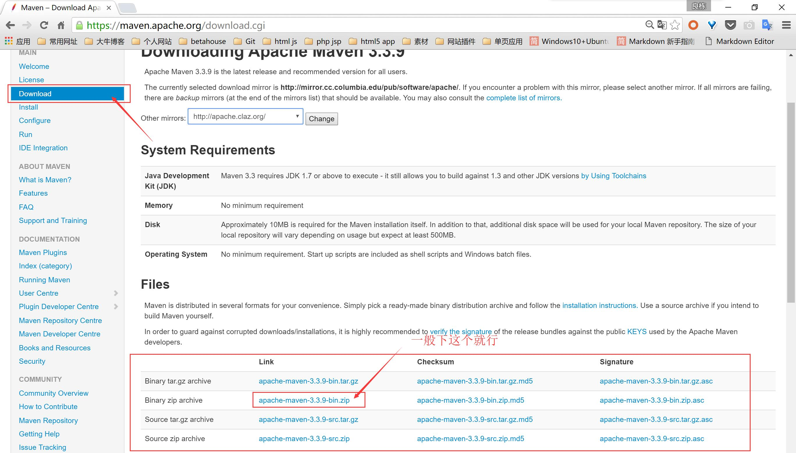
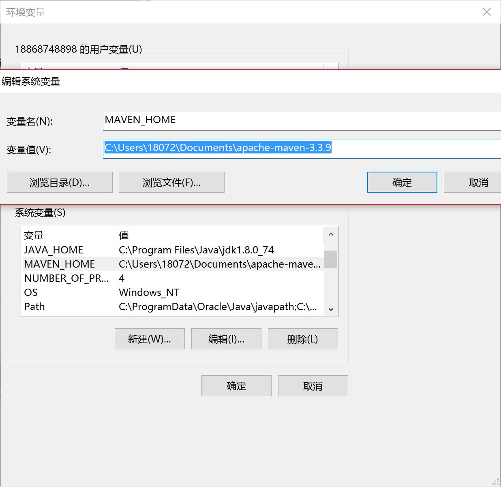
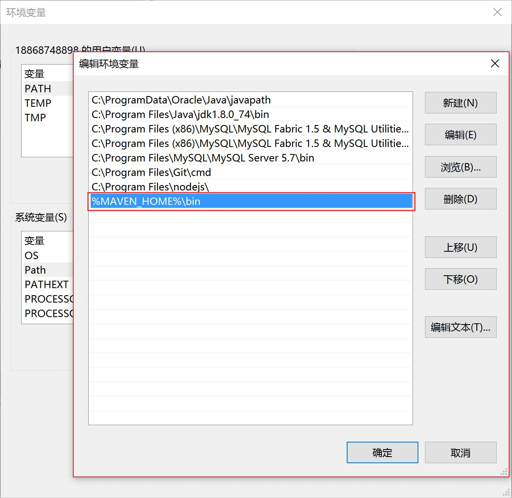
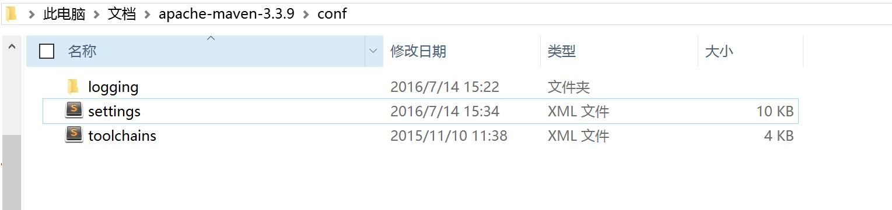
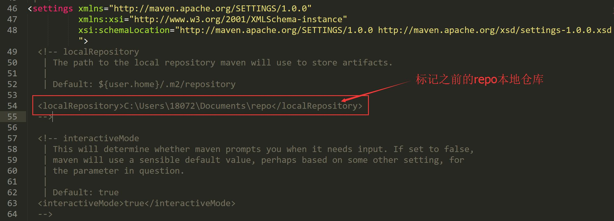
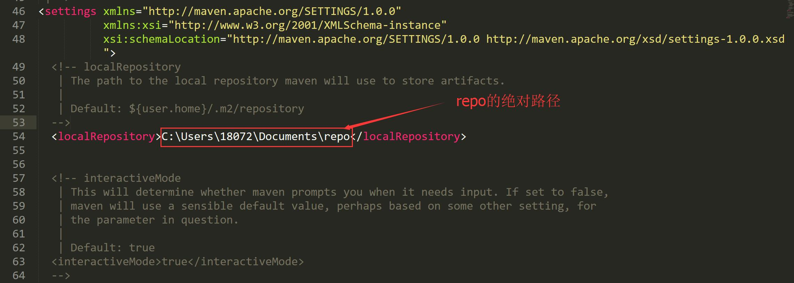
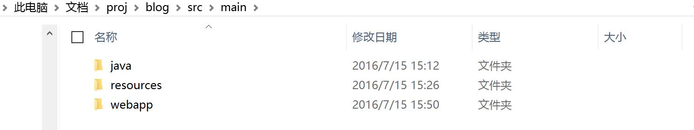
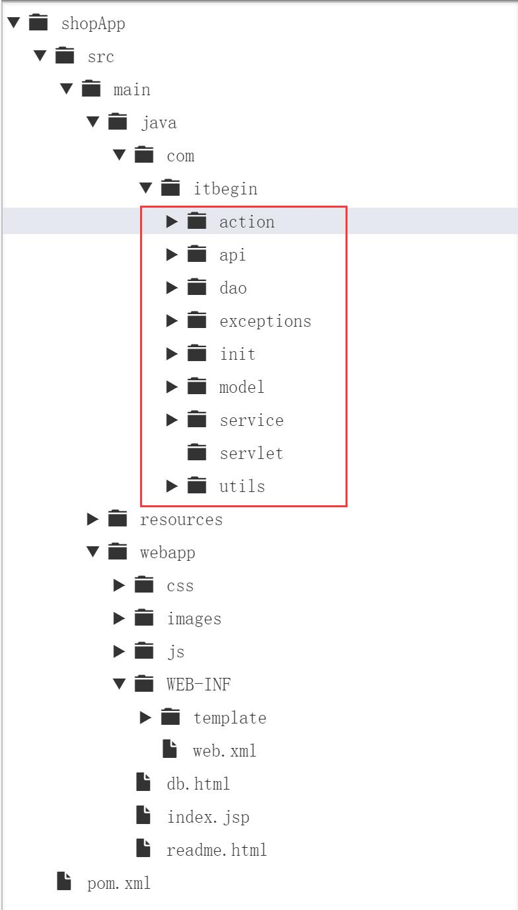

下载maven压缩包

2. 解压到你要放置的地方，并配置环境变量
先将解压后的根目录路径配置到变量名为 MAVEN_HOME

再定位到该路径下的bin文件夹，并将其配置到Path变量，%MAVEN_HOME%\bin

3. 新建两个文件夹
一个repo当做本地仓库，一个proj用来放置项目
4. 连接maven和本地仓库repo
进入之前解压的maven包下的conf文件夹

打开settings.xml文件

我们需要maven标记我们本地仓库repo的位置，但这一行被注释了，我们需要把他放出来，并换上repo的绝对路径

5. 从maven远程仓库下载资源
打开win命令行，cd到proj然后创建项目文件夹，此处以blog为例，然后在命令行输入以下代码
mvn archetype:generate -DgroupId=com.itbegin.blog -DartifactId=blog -DarchetypeArtifactId=maven-archetype-webapp
DgroupId是java文件的包名，代表组织和整个项目的唯一标志。
DartifactId是具体项目的名称，它于groupId共同确定一个项目在maven repo中的位置。
按下enter后，如果是第一次，本地仓库会自己去远程仓库下载所需的东西到repo里面，以后就无需下载了。
1. 此时，blog目录下会有
- src
- pom.xml
其他都是没用的，打开pom.xml
1
2
3
4
5
6
7
8
9
10
11
12
13
14
15
16
17
18
19
20
21
22
23
24
25
26
27
28
29
30
31
32
33
34
35
36
37
38
39
40
41
42
43
44
45
46
47
48
49
50
51
52
53
54
55
56
57
58
59
60
61
62
63
64
65
66
67
68
69
70
71
72
73
74
75
76
77
78
79
80
81
82
83
84
85
86
87
88
89
90
91
92
93
| <?xml version="1.0" encoding="UTF-8"?>
<project xmlns="http://maven.apache.org/POM/4.0.0" xmlns:xsi="http://www.w3.org/2001/XMLSchema-instance"
xsi:schemaLocation="http://maven.apache.org/POM/4.0.0 http://maven.apache.org/maven-v4_0_0.xsd">
<modelVersion>4.0.0</modelVersion>
<groupId>com.itbegin</groupId>
<artifactId>blog</artifactId>
<packaging>war</packaging>
<version>1.0-SNAPSHOT</version>
<properties>
<project.build.sourceEncoding>UTF-8</project.build.sourceEncoding>
<version.spring>4.2.4.RELEASE</version.spring>
</properties>
<dependencies>
<dependency>
<groupId>junit</groupId>
<artifactId>junit</artifactId>
<version>4.8.2</version>
<scope>test</scope>
</dependency>
<dependency>
<groupId>javax.servlet</groupId>
<artifactId>javax.servlet-api</artifactId>
<version>3.1.0</version>
<scope>provided</scope>
</dependency>
<dependency>
<groupId>com.fasterxml.jackson.core</groupId>
<artifactId>jackson-databind</artifactId>
<version>2.3.3</version>
</dependency>
<dependency>
<groupId>org.springframework</groupId>
<artifactId>spring-webmvc</artifactId>
<version>${version.spring}</version>
</dependency>
<dependency>
<groupId>org.springframework</groupId>
<artifactId>spring-context-support</artifactId>
<version>${version.spring}</version>
</dependency>
<dependency>
<groupId>org.springframework</groupId>
<artifactId>spring-jdbc</artifactId>
<version>${version.spring}</version>
</dependency>
<dependency>
<groupId>org.freemarker</groupId>
<artifactId>freemarker</artifactId>
<version>2.3.20</version>
</dependency>
<dependency>
<groupId>com.h2database</groupId>
<artifactId>h2</artifactId>
<version>1.4.186</version>
</dependency>
</dependencies>
<build>
<finalName>test</finalName>
<directory>${my.target}</directory>
<plugins>
<plugin>
<groupId>org.apache.maven.plugins</groupId>
<artifactId>maven-compiler-plugin</artifactId>
<version>3.1</version>
<configuration>
<source>1.7</source>
<target>1.7</target>
<encoding>UTF-8</encoding>
</configuration>
</plugin>
<plugin>
<groupId>org.apache.maven.plugins</groupId>
<artifactId>maven-source-plugin</artifactId>
<version>2.6</version>
<configuration>
<encoding>UTF-8</encoding>
</configuration>
</plugin>
<plugin>
<groupId>org.apache.tomcat.maven</groupId>
<artifactId>tomcat7-maven-plugin</artifactId>
<version>2.2</version>
<configuration>
<path>/</path>
<contextReloadable>true</contextReloadable>
<uriEncoding>UTF-8</uriEncoding>
</configuration>
</plugin>
</plugins>
</build>
</project>
|
直接用以上全部代码覆盖之前pom.xml的代码，当然有需要的可以改。
2. 之后打开proj\blog\src\main\webapp\WEB-INF 下的web.xml,同样用下方的代码进行覆盖
1
2
3
4
5
6
7
8
9
10
11
12
13
14
15
16
| <?xml version="1.0" encoding="UTF-8"?>
<!DOCTYPE web-app PUBLIC
"-//Sun Microsystems, Inc.//DTD Web Application 2.3//EN"
"http://java.sun.com/dtd/web-app_2_3.dtd" >
<web-app>
<display-name></display-name>
<listener>
<listener-class>org.springframework.web.context.ContextLoaderListener
</listener-class>
</listener>
<context-param>
<param-name>contextConfigLocation</param-name>
<param-value>classpath:applicationContext*.xml</param-value>
</context-param>
</web-app>
|
3. 创建资源文件
进入proj\blog\src\main\resources下，创建applicationContext-jdbc.xml，并粘贴以下内容。
1
2
3
4
5
6
7
8
9
10
11
12
13
14
15
16
17
18
19
20
21
22
23
24
25
26
| <?xml version="1.0" encoding="UTF-8"?>
<beans xmlns="http://www.springframework.org/schema/beans"
xmlns:xsi="http://www.w3.org/2001/XMLSchema-instance"
xmlns:jdbc="http://www.springframework.org/schema/jdbc"
xsi:schemaLocation="http://www.springframework.org/schema/beans
http://www.springframework.org/schema/beans/spring-beans.xsd
http://www.springframework.org/schema/jdbc http://www.springframework.org/schema/jdbc/spring-jdbc-3.2.xsd
">
<bean id="dataSource" class="org.h2.jdbcx.JdbcConnectionPool"
destroy-method="dispose">
<constructor-arg>
<bean class="org.h2.jdbcx.JdbcDataSource">
<!-- 内存模式 -->
<!-- <property name="URL" value="jdbc:h2:" />-->
<!-- 文件模式 -->
<property name="URL" value="jdbc:h2:c:\tmp\blog" />
<property name="user" value="sa" />
<property name="password" value="sa" />
</bean>
</constructor-arg>
</bean>
<bean id="jdbcTemplate" class="org.springframework.jdbc.core.JdbcTemplate">
<property name = "dataSource" ref="dataSource"/>
</bean>
<!-- 初始化数据表结构 -->
</beans>
|
4. 创建所需的目录结构
在WEB-INF下创建template文件夹，里面放.ftl文件，用来显示view。
到proj\blog\src\main下,创建java的文件夹之后就会有如下所示的大致结构，

之后构建proj\blog\src\main\java\com\itbegin这样的路径，在这个目录下可以放置如下的文件夹

6. 启动内置的Tomcat
打开命令行，进入blog项目的根目录，输入clean tomcat7:run,便会自动下载以及启动Tomcat,在网址中输入localhost:8080即可访问